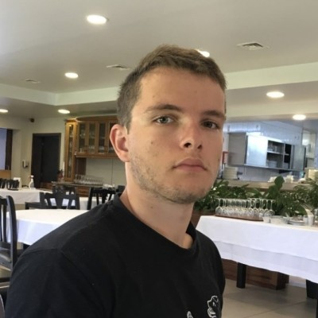

Portfolio de projets SIG, cartographie numérique et webmapping.
Faire parler la donnée géographique et la rendre claire et accessible : c'est ce qui me motive au quotidien. Diplômé du Master Carthagéo à l’Université Paris-Cité, j’analyse des données spatiales et images et conçois des supports cartographiques statiques et interactifs pour l'aide à la décision. Mon objectif est de développer des solutions SIG permettant de transformer des données complexes en informations exploitables pour accompagner la prise de décision dans des domaines variés tels que la gestion des territoires, de l'environnement, des infrastructures ou des réseaux. Tout au long de mon parcours universitaire et professionnel, j'ai développé des compétences en cartographie, télédétection, bases de données géographiques (PostGIS), développement d'applications web cartographiques (Leaflet) et langages de programmation (R, JavaScript, Python). Sérieux, organisé et soucieux du détail, je suis autonome dans mes tâches mais je suis également capable de travailler avec des équipes pluridisciplinaires et aux visions différentes pour concevoir des solutions adaptées aux besoins de tous. Ouvert à différentes approches, je sais prendre du recul afin d'identifier les solutions les plus pertinentes selon le contexte et les besoins. J'aime aussi partager ma passion du SIG et accompagner les utilisateurs dans la compréhension de l'information géographique. Récemment, j'ai participé à une mission de suivi de la cacaoculture et de la déforestation au Cameroun dans le cadre du programme V-Forêts où j'ai pu développer ma capacité d'adaptation dans un contexte international, appréhender les réalités du terrain et améliorer mon efficacité dans la production et l'exploitation de données géographiques. Fort de cette expérience, je suis aujourd'hui à la recherche d'un poste de géomaticien ou de cartographe où je pourrai contribuer à des projets forts de sens et diversifiés, continuer à développer mes compétences et mettre la donnée géographique au service de l'analyse. Je suis aujourd'hui ouvert aux échanges avec des structures souhaitant valoriser leurs données géographiques et développer des solutions adaptées à leurs besoins.
Ce portfolio présente des projets réalisés autour des systèmes d'information géographique, du webmapping et de l'analyse territoriale.
QGIS, ArcGIS Pro, PostGIS, gestion et analyse de données spatiales.
HTML, CSS, JavaScript, Leaflet, cartes interactives.
Python, R, télédétection, traitement d'images satellites.
Découvrez mes réalisations en cartographie, analyse spatiale et développement d'applications web SIG.
Voir les projetsRetrouvez mes projets et mon code source :
GitHub